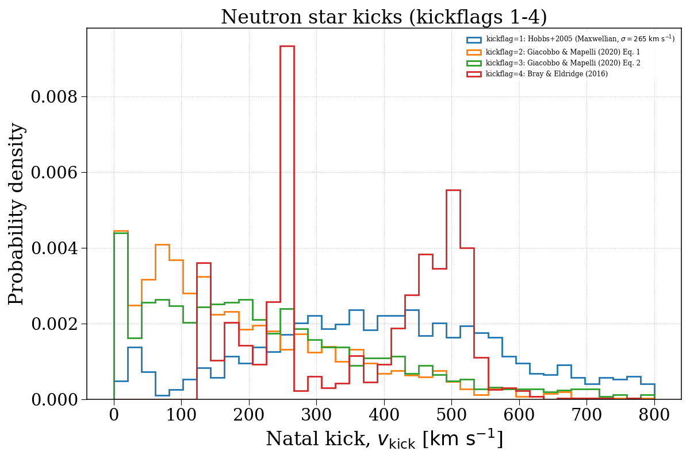
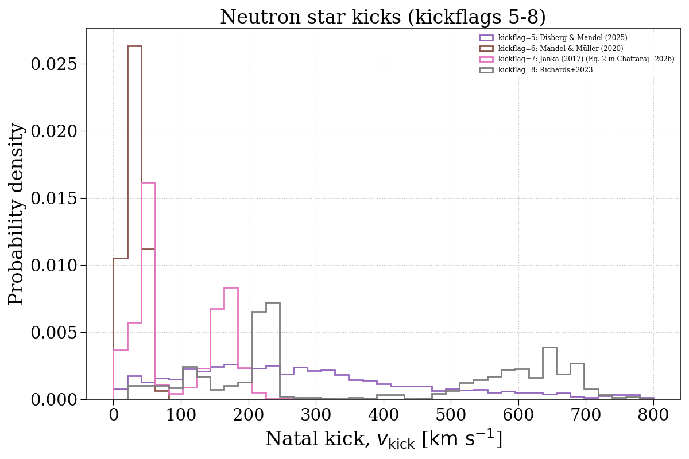
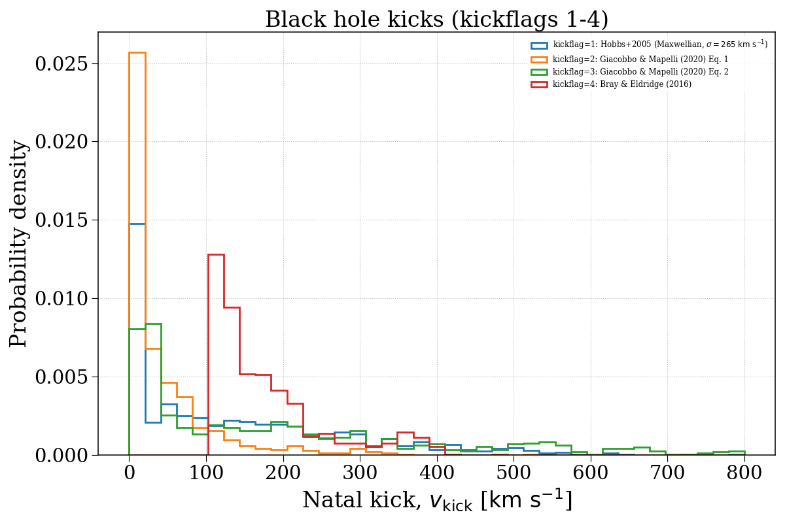
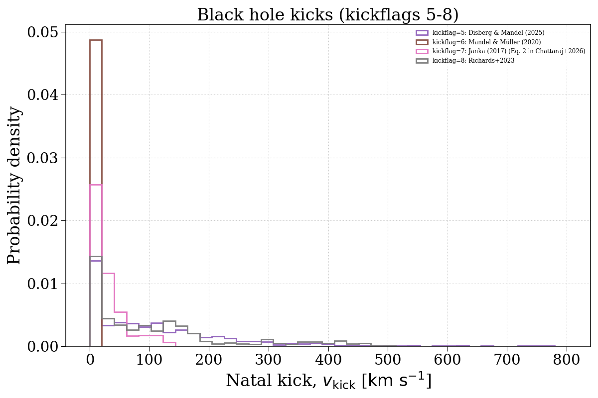

Note
Go to the end to download the full example code.
kickflag¶
This example demonstrates how changing the kickflag parameter can affect the natal kick velocity distributions of compact objects. We separate this into neutron stars and black holes.




Evolving population with kickflag = 1...
Evolving: 0%| | 0/2021 [00:00<?, ?sys/s]
Evolving: 2%|▏ | 41/2021 [00:00<00:05, 392.96sys/s]
Evolving: 4%|▍ | 81/2021 [00:00<00:10, 182.70sys/s]
Evolving: 5%|▌ | 105/2021 [00:00<00:11, 165.00sys/s]
Evolving: 6%|▌ | 125/2021 [00:00<00:13, 137.84sys/s]
Evolving: 7%|▋ | 143/2021 [00:00<00:12, 146.95sys/s]
Evolving: 8%|▊ | 160/2021 [00:01<00:15, 118.11sys/s]
Evolving: 9%|▉ | 182/2021 [00:01<00:13, 139.20sys/s]
Evolving: 10%|▉ | 199/2021 [00:01<00:13, 136.51sys/s]
Evolving: 11%|█ | 215/2021 [00:01<00:14, 124.31sys/s]
Evolving: 11%|█▏ | 229/2021 [00:01<00:17, 103.33sys/s]
Evolving: 12%|█▏ | 241/2021 [00:01<00:16, 106.02sys/s]
Evolving: 13%|█▎ | 253/2021 [00:02<00:19, 90.47sys/s]
Evolving: 14%|█▎ | 277/2021 [00:02<00:16, 104.34sys/s]
Evolving: 15%|█▍ | 299/2021 [00:02<00:13, 127.90sys/s]
Evolving: 16%|█▌ | 316/2021 [00:02<00:12, 131.43sys/s]
Evolving: 16%|█▋ | 331/2021 [00:02<00:12, 135.08sys/s]
Evolving: 17%|█▋ | 346/2021 [00:02<00:12, 129.26sys/s]
Evolving: 18%|█▊ | 361/2021 [00:02<00:12, 131.95sys/s]
Evolving: 19%|█▊ | 375/2021 [00:03<00:17, 93.25sys/s]
Evolving: 20%|█▉ | 397/2021 [00:03<00:14, 113.73sys/s]
Evolving: 20%|██ | 412/2021 [00:03<00:13, 120.30sys/s]
Evolving: 21%|██ | 426/2021 [00:03<00:13, 118.27sys/s]
Evolving: 22%|██▏ | 443/2021 [00:03<00:12, 121.76sys/s]
Evolving: 23%|██▎ | 460/2021 [00:03<00:16, 93.39sys/s]
Evolving: 24%|██▎ | 479/2021 [00:03<00:16, 95.20sys/s]
Evolving: 25%|██▌ | 507/2021 [00:04<00:11, 130.49sys/s]
Evolving: 26%|██▌ | 523/2021 [00:04<00:11, 131.30sys/s]
Evolving: 27%|██▋ | 539/2021 [00:04<00:10, 135.66sys/s]
Evolving: 27%|██▋ | 555/2021 [00:04<00:12, 114.20sys/s]
Evolving: 28%|██▊ | 573/2021 [00:04<00:11, 126.13sys/s]
Evolving: 29%|██▉ | 588/2021 [00:04<00:12, 112.01sys/s]
Evolving: 30%|██▉ | 601/2021 [00:04<00:14, 95.51sys/s]
Evolving: 31%|███ | 624/2021 [00:05<00:11, 121.21sys/s]
Evolving: 32%|███▏ | 638/2021 [00:05<00:12, 106.42sys/s]
Evolving: 32%|███▏ | 651/2021 [00:05<00:16, 81.81sys/s]
Evolving: 33%|███▎ | 672/2021 [00:05<00:16, 82.93sys/s]
Evolving: 34%|███▍ | 697/2021 [00:05<00:12, 103.70sys/s]
Evolving: 35%|███▌ | 715/2021 [00:06<00:11, 116.74sys/s]
Evolving: 36%|███▌ | 731/2021 [00:06<00:10, 123.59sys/s]
Evolving: 37%|███▋ | 745/2021 [00:06<00:12, 98.33sys/s]
Evolving: 37%|███▋ | 757/2021 [00:06<00:13, 94.68sys/s]
Evolving: 39%|███▊ | 782/2021 [00:06<00:10, 121.67sys/s]
Evolving: 40%|███▉ | 799/2021 [00:06<00:10, 115.16sys/s]
Evolving: 40%|████ | 818/2021 [00:06<00:09, 128.86sys/s]
Evolving: 41%|████▏ | 835/2021 [00:07<00:08, 136.96sys/s]
Evolving: 42%|████▏ | 850/2021 [00:07<00:09, 125.03sys/s]
Evolving: 43%|████▎ | 868/2021 [00:07<00:08, 137.54sys/s]
Evolving: 44%|████▎ | 883/2021 [00:07<00:08, 127.86sys/s]
Evolving: 45%|████▍ | 900/2021 [00:07<00:08, 133.40sys/s]
Evolving: 45%|████▌ | 914/2021 [00:07<00:08, 129.89sys/s]
Evolving: 46%|████▌ | 928/2021 [00:07<00:08, 121.50sys/s]
Evolving: 47%|████▋ | 941/2021 [00:07<00:10, 100.11sys/s]
Evolving: 48%|████▊ | 966/2021 [00:08<00:08, 128.45sys/s]
Evolving: 48%|████▊ | 980/2021 [00:08<00:07, 130.75sys/s]
Evolving: 49%|████▉ | 995/2021 [00:08<00:07, 129.36sys/s]
Evolving: 50%|█████ | 1012/2021 [00:08<00:07, 139.25sys/s]
Evolving: 51%|█████ | 1027/2021 [00:08<00:07, 126.14sys/s]
Evolving: 52%|█████▏ | 1041/2021 [00:08<00:07, 129.20sys/s]
Evolving: 52%|█████▏ | 1055/2021 [00:08<00:08, 117.19sys/s]
Evolving: 53%|█████▎ | 1075/2021 [00:08<00:06, 135.20sys/s]
Evolving: 54%|█████▍ | 1090/2021 [00:09<00:06, 136.29sys/s]
Evolving: 55%|█████▍ | 1105/2021 [00:09<00:06, 137.09sys/s]
Evolving: 55%|█████▌ | 1119/2021 [00:09<00:07, 126.49sys/s]
Evolving: 56%|█████▌ | 1132/2021 [00:09<00:09, 96.69sys/s]
Evolving: 57%|█████▋ | 1161/2021 [00:09<00:06, 135.76sys/s]
Evolving: 58%|█████▊ | 1177/2021 [00:09<00:06, 132.95sys/s]
Evolving: 59%|█████▉ | 1193/2021 [00:09<00:06, 134.98sys/s]
Evolving: 60%|█████▉ | 1208/2021 [00:09<00:06, 134.28sys/s]
Evolving: 61%|██████ | 1223/2021 [00:10<00:07, 100.63sys/s]
Evolving: 62%|██████▏ | 1248/2021 [00:10<00:05, 129.27sys/s]
Evolving: 62%|██████▏ | 1263/2021 [00:10<00:07, 100.04sys/s]
Evolving: 63%|██████▎ | 1282/2021 [00:10<00:08, 90.72sys/s]
Evolving: 65%|██████▍ | 1311/2021 [00:10<00:05, 124.59sys/s]
Evolving: 66%|██████▌ | 1327/2021 [00:11<00:06, 114.48sys/s]
Evolving: 67%|██████▋ | 1347/2021 [00:11<00:05, 130.12sys/s]
Evolving: 67%|██████▋ | 1363/2021 [00:11<00:06, 99.08sys/s]
Evolving: 68%|██████▊ | 1382/2021 [00:11<00:05, 113.69sys/s]
Evolving: 69%|██████▉ | 1399/2021 [00:11<00:05, 116.65sys/s]
Evolving: 70%|███████ | 1420/2021 [00:11<00:04, 136.41sys/s]
Evolving: 71%|███████ | 1436/2021 [00:11<00:04, 134.84sys/s]
Evolving: 72%|███████▏ | 1451/2021 [00:12<00:04, 137.43sys/s]
Evolving: 73%|███████▎ | 1466/2021 [00:12<00:04, 134.36sys/s]
Evolving: 73%|███████▎ | 1481/2021 [00:12<00:04, 115.08sys/s]
Evolving: 74%|███████▍ | 1499/2021 [00:12<00:04, 129.05sys/s]
Evolving: 75%|███████▍ | 1513/2021 [00:12<00:03, 128.63sys/s]
Evolving: 76%|███████▌ | 1527/2021 [00:12<00:04, 118.94sys/s]
Evolving: 76%|███████▋ | 1546/2021 [00:12<00:03, 135.06sys/s]
Evolving: 77%|███████▋ | 1561/2021 [00:12<00:03, 136.25sys/s]
Evolving: 78%|███████▊ | 1576/2021 [00:13<00:04, 111.10sys/s]
Evolving: 79%|███████▊ | 1589/2021 [00:13<00:04, 106.39sys/s]
Evolving: 80%|███████▉ | 1610/2021 [00:13<00:03, 127.18sys/s]
Evolving: 80%|████████ | 1624/2021 [00:13<00:03, 120.05sys/s]
Evolving: 81%|████████ | 1637/2021 [00:13<00:03, 102.62sys/s]
Evolving: 82%|████████▏ | 1652/2021 [00:13<00:03, 109.95sys/s]
Evolving: 83%|████████▎ | 1668/2021 [00:13<00:03, 115.86sys/s]
Evolving: 83%|████████▎ | 1681/2021 [00:14<00:03, 90.60sys/s]
Evolving: 85%|████████▍ | 1712/2021 [00:14<00:02, 133.63sys/s]
Evolving: 86%|████████▌ | 1728/2021 [00:14<00:02, 110.00sys/s]
Evolving: 86%|████████▌ | 1742/2021 [00:14<00:03, 92.29sys/s]
Evolving: 88%|████████▊ | 1771/2021 [00:14<00:02, 124.15sys/s]
Evolving: 88%|████████▊ | 1786/2021 [00:14<00:01, 126.40sys/s]
Evolving: 89%|████████▉ | 1801/2021 [00:15<00:01, 128.37sys/s]
Evolving: 90%|████████▉ | 1816/2021 [00:15<00:01, 119.24sys/s]
Evolving: 91%|█████████ | 1832/2021 [00:15<00:01, 126.48sys/s]
Evolving: 91%|█████████▏| 1846/2021 [00:15<00:01, 127.72sys/s]
Evolving: 92%|█████████▏| 1860/2021 [00:15<00:01, 120.56sys/s]
Evolving: 93%|█████████▎| 1875/2021 [00:15<00:01, 127.61sys/s]
Evolving: 93%|█████████▎| 1889/2021 [00:15<00:01, 119.03sys/s]
Evolving: 94%|█████████▍| 1904/2021 [00:16<00:01, 84.42sys/s]
Evolving: 96%|█████████▌| 1933/2021 [00:16<00:00, 124.32sys/s]
Evolving: 96%|█████████▋| 1949/2021 [00:16<00:00, 115.11sys/s]
Evolving: 97%|█████████▋| 1967/2021 [00:16<00:00, 128.09sys/s]
Evolving: 98%|█████████▊| 1982/2021 [00:16<00:00, 99.50sys/s]
Evolving: 99%|█████████▉| 2008/2021 [00:16<00:00, 131.35sys/s]
Evolving: 100%|██████████| 2021/2021 [00:16<00:00, 119.98sys/s]
[Time taken: 17.2283 seconds]
Evolving population with kickflag = 2...
Evolving: 0%| | 0/2021 [00:00<?, ?sys/s]
Evolving: 0%| | 8/2021 [00:00<00:30, 66.26sys/s]
Evolving: 1%|▏ | 28/2021 [00:00<00:15, 131.64sys/s]
Evolving: 2%|▏ | 43/2021 [00:00<00:14, 133.16sys/s]
Evolving: 3%|▎ | 58/2021 [00:00<00:16, 115.95sys/s]
Evolving: 4%|▍ | 76/2021 [00:00<00:14, 135.07sys/s]
Evolving: 5%|▍ | 92/2021 [00:00<00:14, 133.29sys/s]
Evolving: 5%|▌ | 109/2021 [00:00<00:13, 141.34sys/s]
Evolving: 6%|▌ | 124/2021 [00:01<00:16, 114.03sys/s]
Evolving: 7%|▋ | 145/2021 [00:01<00:13, 136.86sys/s]
Evolving: 8%|▊ | 160/2021 [00:01<00:16, 109.56sys/s]
Evolving: 9%|▉ | 185/2021 [00:01<00:13, 138.03sys/s]
Evolving: 10%|▉ | 201/2021 [00:01<00:13, 130.62sys/s]
Evolving: 11%|█ | 216/2021 [00:01<00:14, 122.95sys/s]
Evolving: 11%|█▏ | 230/2021 [00:02<00:20, 87.08sys/s]
Evolving: 12%|█▏ | 250/2021 [00:02<00:19, 91.46sys/s]
Evolving: 14%|█▎ | 277/2021 [00:02<00:15, 113.29sys/s]
Evolving: 15%|█▍ | 297/2021 [00:02<00:13, 127.33sys/s]
Evolving: 15%|█▌ | 312/2021 [00:02<00:12, 132.10sys/s]
Evolving: 16%|█▌ | 327/2021 [00:02<00:12, 130.84sys/s]
Evolving: 17%|█▋ | 341/2021 [00:02<00:12, 130.41sys/s]
Evolving: 18%|█▊ | 356/2021 [00:02<00:12, 134.52sys/s]
Evolving: 18%|█▊ | 370/2021 [00:03<00:18, 89.66sys/s]
Evolving: 19%|█▉ | 393/2021 [00:03<00:14, 115.84sys/s]
Evolving: 20%|██ | 408/2021 [00:03<00:13, 122.28sys/s]
Evolving: 21%|██ | 423/2021 [00:03<00:12, 124.45sys/s]
Evolving: 22%|██▏ | 437/2021 [00:03<00:13, 121.54sys/s]
Evolving: 22%|██▏ | 451/2021 [00:03<00:12, 124.92sys/s]
Evolving: 23%|██▎ | 465/2021 [00:03<00:15, 97.39sys/s]
Evolving: 24%|██▎ | 479/2021 [00:04<00:17, 86.24sys/s]
Evolving: 25%|██▌ | 509/2021 [00:04<00:11, 129.24sys/s]
Evolving: 26%|██▌ | 525/2021 [00:04<00:11, 130.26sys/s]
Evolving: 27%|██▋ | 541/2021 [00:04<00:11, 132.28sys/s]
Evolving: 28%|██▊ | 556/2021 [00:04<00:12, 113.30sys/s]
Evolving: 28%|██▊ | 569/2021 [00:04<00:12, 116.22sys/s]
Evolving: 29%|██▉ | 582/2021 [00:05<00:14, 96.04sys/s]
Evolving: 29%|██▉ | 593/2021 [00:05<00:17, 80.39sys/s]
Evolving: 31%|███ | 626/2021 [00:05<00:13, 100.61sys/s]
Evolving: 32%|███▏ | 639/2021 [00:05<00:15, 90.20sys/s]
Evolving: 33%|███▎ | 667/2021 [00:05<00:11, 122.47sys/s]
Evolving: 34%|███▎ | 682/2021 [00:06<00:13, 100.06sys/s]
Evolving: 34%|███▍ | 697/2021 [00:06<00:12, 103.02sys/s]
Evolving: 35%|███▌ | 717/2021 [00:06<00:10, 120.10sys/s]
Evolving: 36%|███▌ | 731/2021 [00:06<00:10, 120.63sys/s]
Evolving: 37%|███▋ | 745/2021 [00:06<00:13, 96.50sys/s]
Evolving: 37%|███▋ | 757/2021 [00:06<00:13, 97.08sys/s]
Evolving: 39%|███▊ | 780/2021 [00:06<00:09, 124.16sys/s]
Evolving: 39%|███▉ | 794/2021 [00:06<00:09, 123.95sys/s]
Evolving: 40%|███▉ | 808/2021 [00:07<00:09, 124.64sys/s]
Evolving: 41%|████ | 824/2021 [00:07<00:09, 127.28sys/s]
Evolving: 42%|████▏ | 839/2021 [00:07<00:09, 128.21sys/s]
Evolving: 42%|████▏ | 854/2021 [00:07<00:08, 132.79sys/s]
Evolving: 43%|████▎ | 869/2021 [00:07<00:08, 132.23sys/s]
Evolving: 44%|████▎ | 883/2021 [00:07<00:09, 123.15sys/s]
Evolving: 45%|████▍ | 901/2021 [00:07<00:08, 134.42sys/s]
Evolving: 45%|████▌ | 915/2021 [00:07<00:08, 129.90sys/s]
Evolving: 46%|████▌ | 929/2021 [00:07<00:08, 127.23sys/s]
Evolving: 47%|████▋ | 942/2021 [00:08<00:10, 101.27sys/s]
Evolving: 48%|████▊ | 968/2021 [00:08<00:07, 136.08sys/s]
Evolving: 49%|████▊ | 983/2021 [00:08<00:07, 135.62sys/s]
Evolving: 49%|████▉ | 998/2021 [00:08<00:07, 136.00sys/s]
Evolving: 50%|█████ | 1013/2021 [00:08<00:07, 129.65sys/s]
Evolving: 51%|█████ | 1027/2021 [00:08<00:07, 132.05sys/s]
Evolving: 52%|█████▏ | 1041/2021 [00:08<00:07, 129.16sys/s]
Evolving: 52%|█████▏ | 1055/2021 [00:09<00:08, 110.27sys/s]
Evolving: 53%|█████▎ | 1074/2021 [00:09<00:07, 129.67sys/s]
Evolving: 54%|█████▍ | 1091/2021 [00:09<00:06, 138.30sys/s]
Evolving: 55%|█████▍ | 1106/2021 [00:09<00:06, 140.02sys/s]
Evolving: 55%|█████▌ | 1121/2021 [00:09<00:06, 131.85sys/s]
Evolving: 56%|█████▌ | 1135/2021 [00:09<00:08, 107.78sys/s]
Evolving: 57%|█████▋ | 1158/2021 [00:09<00:06, 133.59sys/s]
Evolving: 58%|█████▊ | 1173/2021 [00:09<00:06, 132.84sys/s]
Evolving: 59%|█████▉ | 1188/2021 [00:09<00:06, 136.75sys/s]
Evolving: 60%|█████▉ | 1203/2021 [00:10<00:05, 136.77sys/s]
Evolving: 60%|██████ | 1218/2021 [00:10<00:08, 91.46sys/s]
Evolving: 62%|██████▏ | 1247/2021 [00:10<00:05, 130.87sys/s]
Evolving: 63%|██████▎ | 1264/2021 [00:10<00:07, 102.78sys/s]
Evolving: 63%|██████▎ | 1282/2021 [00:10<00:08, 91.59sys/s]
Evolving: 65%|██████▍ | 1312/2021 [00:11<00:05, 126.13sys/s]
Evolving: 66%|██████▌ | 1329/2021 [00:11<00:05, 118.75sys/s]
Evolving: 67%|██████▋ | 1347/2021 [00:11<00:05, 129.19sys/s]
Evolving: 67%|██████▋ | 1363/2021 [00:11<00:06, 96.92sys/s]
Evolving: 68%|██████▊ | 1382/2021 [00:11<00:05, 110.89sys/s]
Evolving: 69%|██████▉ | 1399/2021 [00:11<00:05, 117.81sys/s]
Evolving: 70%|███████ | 1420/2021 [00:12<00:04, 137.17sys/s]
Evolving: 71%|███████ | 1436/2021 [00:12<00:04, 134.30sys/s]
Evolving: 72%|███████▏ | 1452/2021 [00:12<00:04, 137.97sys/s]
Evolving: 73%|███████▎ | 1467/2021 [00:12<00:04, 131.90sys/s]
Evolving: 73%|███████▎ | 1481/2021 [00:12<00:04, 117.64sys/s]
Evolving: 74%|███████▍ | 1499/2021 [00:12<00:04, 128.05sys/s]
Evolving: 75%|███████▍ | 1513/2021 [00:12<00:03, 129.95sys/s]
Evolving: 76%|███████▌ | 1527/2021 [00:12<00:04, 121.44sys/s]
Evolving: 76%|███████▋ | 1546/2021 [00:12<00:03, 134.59sys/s]
Evolving: 77%|███████▋ | 1560/2021 [00:13<00:03, 135.18sys/s]
Evolving: 78%|███████▊ | 1574/2021 [00:13<00:04, 107.44sys/s]
Evolving: 78%|███████▊ | 1586/2021 [00:13<00:04, 101.19sys/s]
Evolving: 80%|███████▉ | 1609/2021 [00:13<00:03, 125.41sys/s]
Evolving: 80%|████████ | 1623/2021 [00:13<00:03, 117.42sys/s]
Evolving: 81%|████████ | 1636/2021 [00:13<00:03, 103.24sys/s]
Evolving: 82%|████████▏ | 1650/2021 [00:13<00:03, 111.50sys/s]
Evolving: 82%|████████▏ | 1667/2021 [00:14<00:02, 119.01sys/s]
Evolving: 83%|████████▎ | 1680/2021 [00:14<00:03, 89.85sys/s]
Evolving: 85%|████████▍ | 1712/2021 [00:14<00:02, 135.23sys/s]
Evolving: 86%|████████▌ | 1729/2021 [00:14<00:02, 111.75sys/s]
Evolving: 86%|████████▌ | 1743/2021 [00:14<00:02, 95.23sys/s]
Evolving: 88%|████████▊ | 1770/2021 [00:14<00:01, 127.18sys/s]
Evolving: 88%|████████▊ | 1786/2021 [00:15<00:01, 126.58sys/s]
Evolving: 89%|████████▉ | 1801/2021 [00:15<00:01, 129.55sys/s]
Evolving: 90%|████████▉ | 1816/2021 [00:15<00:01, 120.32sys/s]
Evolving: 91%|█████████ | 1831/2021 [00:15<00:01, 126.46sys/s]
Evolving: 91%|█████████▏| 1846/2021 [00:15<00:01, 131.46sys/s]
Evolving: 92%|█████████▏| 1860/2021 [00:15<00:01, 121.87sys/s]
Evolving: 93%|█████████▎| 1875/2021 [00:15<00:01, 126.11sys/s]
Evolving: 93%|█████████▎| 1889/2021 [00:15<00:01, 123.85sys/s]
Evolving: 94%|█████████▍| 1904/2021 [00:16<00:01, 85.33sys/s]
Evolving: 95%|█████████▌| 1920/2021 [00:16<00:01, 91.59sys/s]
Evolving: 96%|█████████▋| 1949/2021 [00:16<00:00, 127.21sys/s]
Evolving: 97%|█████████▋| 1966/2021 [00:16<00:00, 135.54sys/s]
Evolving: 98%|█████████▊| 1982/2021 [00:16<00:00, 103.77sys/s]
Evolving: 99%|█████████▉| 2008/2021 [00:16<00:00, 133.14sys/s]
Evolving: 100%|██████████| 2021/2021 [00:17<00:00, 118.65sys/s]
[Time taken: 17.2008 seconds]
Evolving population with kickflag = 3...
Evolving: 0%| | 0/2021 [00:00<?, ?sys/s]
Evolving: 0%| | 2/2021 [00:00<01:44, 19.41sys/s]
Evolving: 1%| | 20/2021 [00:00<00:17, 112.58sys/s]
Evolving: 2%|▏ | 36/2021 [00:00<00:15, 128.25sys/s]
Evolving: 3%|▎ | 51/2021 [00:00<00:14, 133.69sys/s]
Evolving: 3%|▎ | 65/2021 [00:00<00:14, 135.47sys/s]
Evolving: 4%|▍ | 79/2021 [00:00<00:14, 136.51sys/s]
Evolving: 5%|▍ | 93/2021 [00:00<00:14, 134.85sys/s]
Evolving: 5%|▌ | 108/2021 [00:00<00:14, 130.65sys/s]
Evolving: 6%|▌ | 122/2021 [00:01<00:16, 112.85sys/s]
Evolving: 7%|▋ | 134/2021 [00:01<00:16, 114.58sys/s]
Evolving: 7%|▋ | 150/2021 [00:01<00:20, 92.06sys/s]
Evolving: 9%|▉ | 184/2021 [00:01<00:12, 144.93sys/s]
Evolving: 10%|▉ | 201/2021 [00:01<00:13, 136.00sys/s]
Evolving: 11%|█ | 217/2021 [00:01<00:13, 134.69sys/s]
Evolving: 11%|█▏ | 232/2021 [00:02<00:19, 90.52sys/s]
Evolving: 12%|█▏ | 250/2021 [00:02<00:19, 92.57sys/s]
Evolving: 14%|█▎ | 277/2021 [00:02<00:15, 111.62sys/s]
Evolving: 14%|█▍ | 293/2021 [00:02<00:14, 115.99sys/s]
Evolving: 16%|█▌ | 316/2021 [00:02<00:12, 131.96sys/s]
Evolving: 16%|█▋ | 332/2021 [00:02<00:12, 134.83sys/s]
Evolving: 17%|█▋ | 347/2021 [00:02<00:12, 136.13sys/s]
Evolving: 18%|█▊ | 362/2021 [00:02<00:12, 130.87sys/s]
Evolving: 19%|█▊ | 376/2021 [00:03<00:17, 95.93sys/s]
Evolving: 19%|█▉ | 388/2021 [00:03<00:16, 98.02sys/s]
Evolving: 20%|██ | 408/2021 [00:03<00:13, 119.38sys/s]
Evolving: 21%|██ | 422/2021 [00:03<00:12, 124.03sys/s]
Evolving: 22%|██▏ | 436/2021 [00:03<00:12, 125.85sys/s]
Evolving: 22%|██▏ | 450/2021 [00:03<00:12, 126.34sys/s]
Evolving: 23%|██▎ | 464/2021 [00:04<00:16, 95.91sys/s]
Evolving: 24%|██▎ | 479/2021 [00:04<00:18, 84.20sys/s]
Evolving: 25%|██▌ | 512/2021 [00:04<00:11, 129.64sys/s]
Evolving: 26%|██▌ | 528/2021 [00:04<00:11, 130.74sys/s]
Evolving: 27%|██▋ | 543/2021 [00:04<00:10, 134.44sys/s]
Evolving: 28%|██▊ | 558/2021 [00:04<00:12, 121.23sys/s]
Evolving: 28%|██▊ | 572/2021 [00:04<00:11, 122.87sys/s]
Evolving: 29%|██▉ | 586/2021 [00:05<00:13, 105.96sys/s]
Evolving: 30%|██▉ | 598/2021 [00:05<00:16, 85.91sys/s]
Evolving: 31%|███ | 624/2021 [00:05<00:11, 119.06sys/s]
Evolving: 32%|███▏ | 638/2021 [00:05<00:12, 109.58sys/s]
Evolving: 32%|███▏ | 651/2021 [00:05<00:16, 81.57sys/s]
Evolving: 33%|███▎ | 672/2021 [00:06<00:16, 82.93sys/s]
Evolving: 34%|███▍ | 697/2021 [00:06<00:12, 105.50sys/s]
Evolving: 35%|███▌ | 714/2021 [00:06<00:11, 116.21sys/s]
Evolving: 36%|███▌ | 729/2021 [00:06<00:10, 122.84sys/s]
Evolving: 37%|███▋ | 743/2021 [00:06<00:13, 97.79sys/s]
Evolving: 37%|███▋ | 756/2021 [00:06<00:13, 95.06sys/s]
Evolving: 39%|███▊ | 782/2021 [00:06<00:09, 126.68sys/s]
Evolving: 39%|███▉ | 797/2021 [00:06<00:09, 130.01sys/s]
Evolving: 40%|████ | 812/2021 [00:07<00:09, 123.47sys/s]
Evolving: 41%|████ | 828/2021 [00:07<00:09, 129.25sys/s]
Evolving: 42%|████▏ | 843/2021 [00:07<00:10, 117.56sys/s]
Evolving: 43%|████▎ | 861/2021 [00:07<00:08, 130.75sys/s]
Evolving: 43%|████▎ | 877/2021 [00:07<00:08, 137.85sys/s]
Evolving: 44%|████▍ | 892/2021 [00:07<00:08, 132.06sys/s]
Evolving: 45%|████▍ | 906/2021 [00:07<00:08, 124.01sys/s]
Evolving: 46%|████▌ | 922/2021 [00:07<00:08, 131.89sys/s]
Evolving: 46%|████▋ | 936/2021 [00:08<00:08, 131.87sys/s]
Evolving: 47%|████▋ | 950/2021 [00:08<00:09, 115.29sys/s]
Evolving: 48%|████▊ | 970/2021 [00:08<00:08, 124.37sys/s]
Evolving: 49%|████▉ | 986/2021 [00:08<00:07, 131.92sys/s]
Evolving: 50%|████▉ | 1002/2021 [00:08<00:07, 138.41sys/s]
Evolving: 50%|█████ | 1017/2021 [00:08<00:07, 134.72sys/s]
Evolving: 51%|█████ | 1034/2021 [00:08<00:07, 131.08sys/s]
Evolving: 52%|█████▏ | 1048/2021 [00:09<00:09, 104.39sys/s]
Evolving: 53%|█████▎ | 1073/2021 [00:09<00:07, 134.22sys/s]
Evolving: 54%|█████▍ | 1089/2021 [00:09<00:06, 136.89sys/s]
Evolving: 55%|█████▍ | 1106/2021 [00:09<00:06, 141.33sys/s]
Evolving: 55%|█████▌ | 1121/2021 [00:09<00:06, 134.75sys/s]
Evolving: 56%|█████▌ | 1136/2021 [00:09<00:07, 112.93sys/s]
Evolving: 57%|█████▋ | 1157/2021 [00:09<00:06, 135.15sys/s]
Evolving: 58%|█████▊ | 1172/2021 [00:09<00:06, 134.17sys/s]
Evolving: 59%|█████▊ | 1187/2021 [00:09<00:06, 132.36sys/s]
Evolving: 60%|█████▉ | 1204/2021 [00:10<00:06, 132.02sys/s]
Evolving: 60%|██████ | 1218/2021 [00:10<00:08, 91.63sys/s]
Evolving: 62%|██████▏ | 1248/2021 [00:10<00:05, 130.14sys/s]
Evolving: 63%|██████▎ | 1264/2021 [00:10<00:07, 103.77sys/s]
Evolving: 63%|██████▎ | 1282/2021 [00:11<00:08, 89.95sys/s]
Evolving: 65%|██████▌ | 1314/2021 [00:11<00:05, 126.78sys/s]
Evolving: 66%|██████▌ | 1331/2021 [00:11<00:05, 124.38sys/s]
Evolving: 67%|██████▋ | 1346/2021 [00:11<00:05, 129.27sys/s]
Evolving: 67%|██████▋ | 1361/2021 [00:11<00:07, 90.33sys/s]
Evolving: 69%|██████▉ | 1391/2021 [00:11<00:04, 126.69sys/s]
Evolving: 70%|██████▉ | 1408/2021 [00:11<00:04, 130.17sys/s]
Evolving: 71%|███████ | 1425/2021 [00:12<00:04, 129.51sys/s]
Evolving: 71%|███████▏ | 1441/2021 [00:12<00:04, 135.48sys/s]
Evolving: 72%|███████▏ | 1457/2021 [00:12<00:04, 135.78sys/s]
Evolving: 73%|███████▎ | 1472/2021 [00:12<00:05, 98.65sys/s]
Evolving: 74%|███████▍ | 1501/2021 [00:12<00:03, 135.80sys/s]
Evolving: 75%|███████▌ | 1518/2021 [00:12<00:03, 138.91sys/s]
Evolving: 76%|███████▌ | 1535/2021 [00:12<00:03, 132.37sys/s]
Evolving: 77%|███████▋ | 1550/2021 [00:13<00:03, 134.06sys/s]
Evolving: 77%|███████▋ | 1565/2021 [00:13<00:03, 132.38sys/s]
Evolving: 78%|███████▊ | 1580/2021 [00:13<00:04, 94.41sys/s]
Evolving: 79%|███████▉ | 1605/2021 [00:13<00:03, 123.84sys/s]
Evolving: 80%|████████ | 1621/2021 [00:13<00:03, 127.79sys/s]
Evolving: 81%|████████ | 1636/2021 [00:13<00:03, 102.07sys/s]
Evolving: 82%|████████▏ | 1653/2021 [00:13<00:03, 112.29sys/s]
Evolving: 82%|████████▏ | 1667/2021 [00:14<00:02, 118.17sys/s]
Evolving: 83%|████████▎ | 1681/2021 [00:14<00:03, 90.20sys/s]
Evolving: 85%|████████▍ | 1712/2021 [00:14<00:02, 132.55sys/s]
Evolving: 86%|████████▌ | 1729/2021 [00:14<00:02, 111.28sys/s]
Evolving: 86%|████████▌ | 1743/2021 [00:14<00:02, 94.33sys/s]
Evolving: 87%|████████▋ | 1765/2021 [00:14<00:02, 117.37sys/s]
Evolving: 88%|████████▊ | 1781/2021 [00:15<00:01, 122.76sys/s]
Evolving: 89%|████████▉ | 1797/2021 [00:15<00:01, 129.04sys/s]
Evolving: 90%|████████▉ | 1812/2021 [00:15<00:01, 127.64sys/s]
Evolving: 90%|█████████ | 1826/2021 [00:15<00:01, 123.72sys/s]
Evolving: 91%|█████████ | 1840/2021 [00:15<00:01, 126.41sys/s]
Evolving: 92%|█████████▏| 1854/2021 [00:15<00:01, 121.34sys/s]
Evolving: 92%|█████████▏| 1868/2021 [00:15<00:01, 120.62sys/s]
Evolving: 93%|█████████▎| 1884/2021 [00:15<00:01, 114.52sys/s]
Evolving: 94%|█████████▍| 1901/2021 [00:16<00:00, 128.07sys/s]
Evolving: 95%|█████████▍| 1915/2021 [00:16<00:01, 98.03sys/s]
Evolving: 95%|█████████▌| 1927/2021 [00:16<00:00, 102.33sys/s]
Evolving: 96%|█████████▌| 1941/2021 [00:16<00:00, 110.41sys/s]
Evolving: 97%|█████████▋| 1959/2021 [00:16<00:00, 127.68sys/s]
Evolving: 98%|█████████▊| 1975/2021 [00:16<00:00, 133.52sys/s]
Evolving: 98%|█████████▊| 1990/2021 [00:16<00:00, 110.94sys/s]
Evolving: 99%|█████████▉| 2010/2021 [00:17<00:00, 127.12sys/s]
Evolving: 100%|██████████| 2021/2021 [00:17<00:00, 118.51sys/s]
[Time taken: 17.2255 seconds]
Evolving population with kickflag = 4...
Evolving: 0%| | 0/2021 [00:00<?, ?sys/s]
Evolving: 0%| | 4/2021 [00:00<00:54, 36.88sys/s]
Evolving: 1%| | 22/2021 [00:00<00:17, 112.99sys/s]
Evolving: 2%|▏ | 36/2021 [00:00<00:16, 117.10sys/s]
Evolving: 3%|▎ | 54/2021 [00:00<00:14, 137.68sys/s]
Evolving: 3%|▎ | 69/2021 [00:00<00:14, 138.20sys/s]
Evolving: 4%|▍ | 84/2021 [00:00<00:13, 139.80sys/s]
Evolving: 5%|▍ | 99/2021 [00:00<00:13, 137.99sys/s]
Evolving: 6%|▌ | 114/2021 [00:00<00:13, 137.65sys/s]
Evolving: 6%|▋ | 128/2021 [00:01<00:14, 127.26sys/s]
Evolving: 7%|▋ | 143/2021 [00:01<00:14, 132.34sys/s]
Evolving: 8%|▊ | 157/2021 [00:01<00:19, 97.26sys/s]
Evolving: 9%|▉ | 180/2021 [00:01<00:14, 127.18sys/s]
Evolving: 10%|▉ | 196/2021 [00:01<00:14, 130.27sys/s]
Evolving: 10%|█ | 212/2021 [00:01<00:15, 115.87sys/s]
Evolving: 11%|█ | 225/2021 [00:01<00:18, 97.43sys/s]
Evolving: 12%|█▏ | 248/2021 [00:02<00:15, 115.74sys/s]
Evolving: 13%|█▎ | 261/2021 [00:02<00:16, 108.33sys/s]
Evolving: 14%|█▎ | 277/2021 [00:02<00:16, 106.90sys/s]
Evolving: 15%|█▍ | 294/2021 [00:02<00:14, 118.58sys/s]
Evolving: 15%|█▌ | 310/2021 [00:02<00:13, 126.73sys/s]
Evolving: 16%|█▌ | 326/2021 [00:02<00:13, 127.79sys/s]
Evolving: 17%|█▋ | 340/2021 [00:02<00:13, 127.50sys/s]
Evolving: 18%|█▊ | 357/2021 [00:02<00:12, 133.04sys/s]
Evolving: 18%|█▊ | 371/2021 [00:03<00:17, 95.37sys/s]
Evolving: 19%|█▉ | 383/2021 [00:03<00:16, 98.46sys/s]
Evolving: 20%|██ | 408/2021 [00:03<00:12, 132.60sys/s]
Evolving: 21%|██ | 424/2021 [00:03<00:14, 113.71sys/s]
Evolving: 22%|██▏ | 443/2021 [00:03<00:12, 121.46sys/s]
Evolving: 23%|██▎ | 460/2021 [00:03<00:16, 97.02sys/s]
Evolving: 24%|██▎ | 479/2021 [00:04<00:15, 97.45sys/s]
Evolving: 25%|██▌ | 509/2021 [00:04<00:11, 132.18sys/s]
Evolving: 26%|██▌ | 525/2021 [00:04<00:10, 137.26sys/s]
Evolving: 27%|██▋ | 541/2021 [00:04<00:10, 135.55sys/s]
Evolving: 28%|██▊ | 556/2021 [00:04<00:12, 120.14sys/s]
Evolving: 28%|██▊ | 574/2021 [00:04<00:11, 125.58sys/s]
Evolving: 29%|██▉ | 588/2021 [00:04<00:12, 115.09sys/s]
Evolving: 30%|██▉ | 601/2021 [00:05<00:15, 93.88sys/s]
Evolving: 31%|███ | 623/2021 [00:05<00:11, 118.95sys/s]
Evolving: 32%|███▏ | 637/2021 [00:05<00:13, 103.80sys/s]
Evolving: 32%|███▏ | 649/2021 [00:05<00:17, 79.41sys/s]
Evolving: 33%|███▎ | 672/2021 [00:05<00:15, 85.87sys/s]
Evolving: 34%|███▍ | 696/2021 [00:06<00:11, 112.39sys/s]
Evolving: 35%|███▌ | 710/2021 [00:06<00:11, 114.09sys/s]
Evolving: 36%|███▌ | 724/2021 [00:06<00:10, 118.92sys/s]
Evolving: 37%|███▋ | 738/2021 [00:06<00:14, 87.55sys/s]
Evolving: 37%|███▋ | 756/2021 [00:06<00:12, 98.17sys/s]
Evolving: 39%|███▊ | 782/2021 [00:06<00:09, 125.05sys/s]
Evolving: 39%|███▉ | 797/2021 [00:06<00:10, 122.37sys/s]
Evolving: 40%|████ | 813/2021 [00:07<00:09, 130.51sys/s]
Evolving: 41%|████ | 828/2021 [00:07<00:09, 129.44sys/s]
Evolving: 42%|████▏ | 843/2021 [00:07<00:09, 119.44sys/s]
Evolving: 43%|████▎ | 863/2021 [00:07<00:08, 137.65sys/s]
Evolving: 44%|████▎ | 880/2021 [00:07<00:09, 126.74sys/s]
Evolving: 44%|████▍ | 897/2021 [00:07<00:08, 136.01sys/s]
Evolving: 45%|████▌ | 912/2021 [00:07<00:08, 135.82sys/s]
Evolving: 46%|████▌ | 927/2021 [00:07<00:08, 128.32sys/s]
Evolving: 47%|████▋ | 941/2021 [00:08<00:10, 101.90sys/s]
Evolving: 48%|████▊ | 965/2021 [00:08<00:08, 128.53sys/s]
Evolving: 49%|████▊ | 985/2021 [00:08<00:07, 138.50sys/s]
Evolving: 50%|████▉ | 1001/2021 [00:08<00:07, 140.05sys/s]
Evolving: 50%|█████ | 1017/2021 [00:08<00:07, 142.01sys/s]
Evolving: 51%|█████ | 1032/2021 [00:08<00:06, 141.59sys/s]
Evolving: 52%|█████▏ | 1047/2021 [00:08<00:09, 103.05sys/s]
Evolving: 53%|█████▎ | 1074/2021 [00:09<00:07, 134.56sys/s]
Evolving: 54%|█████▍ | 1092/2021 [00:09<00:06, 138.37sys/s]
Evolving: 55%|█████▍ | 1108/2021 [00:09<00:07, 118.01sys/s]
Evolving: 56%|█████▌ | 1129/2021 [00:09<00:08, 109.11sys/s]
Evolving: 57%|█████▋ | 1156/2021 [00:09<00:06, 140.31sys/s]
Evolving: 58%|█████▊ | 1173/2021 [00:09<00:06, 140.56sys/s]
Evolving: 59%|█████▉ | 1189/2021 [00:09<00:05, 139.05sys/s]
Evolving: 60%|█████▉ | 1205/2021 [00:10<00:06, 123.97sys/s]
Evolving: 60%|██████ | 1219/2021 [00:10<00:08, 98.45sys/s]
Evolving: 62%|██████▏ | 1247/2021 [00:10<00:05, 132.96sys/s]
Evolving: 62%|██████▏ | 1263/2021 [00:10<00:07, 103.50sys/s]
Evolving: 63%|██████▎ | 1282/2021 [00:10<00:07, 93.08sys/s]
Evolving: 65%|██████▍ | 1312/2021 [00:11<00:05, 128.85sys/s]
Evolving: 66%|██████▌ | 1329/2021 [00:11<00:05, 119.77sys/s]
Evolving: 67%|██████▋ | 1348/2021 [00:11<00:05, 128.22sys/s]
Evolving: 67%|██████▋ | 1363/2021 [00:11<00:06, 98.16sys/s]
Evolving: 69%|██████▉ | 1393/2021 [00:11<00:04, 133.83sys/s]
Evolving: 70%|██████▉ | 1411/2021 [00:11<00:04, 126.13sys/s]
Evolving: 71%|███████ | 1429/2021 [00:12<00:04, 131.05sys/s]
Evolving: 72%|███████▏ | 1446/2021 [00:12<00:04, 131.07sys/s]
Evolving: 72%|███████▏ | 1463/2021 [00:12<00:04, 138.37sys/s]
Evolving: 73%|███████▎ | 1478/2021 [00:12<00:04, 114.40sys/s]
Evolving: 74%|███████▍ | 1495/2021 [00:12<00:04, 125.23sys/s]
Evolving: 75%|███████▍ | 1512/2021 [00:12<00:03, 132.26sys/s]
Evolving: 76%|███████▌ | 1527/2021 [00:12<00:03, 128.82sys/s]
Evolving: 76%|███████▋ | 1544/2021 [00:12<00:03, 133.71sys/s]
Evolving: 77%|███████▋ | 1558/2021 [00:13<00:03, 133.14sys/s]
Evolving: 78%|███████▊ | 1572/2021 [00:13<00:04, 105.17sys/s]
Evolving: 78%|███████▊ | 1584/2021 [00:13<00:04, 99.89sys/s]
Evolving: 80%|███████▉ | 1610/2021 [00:13<00:03, 136.42sys/s]
Evolving: 80%|████████ | 1626/2021 [00:13<00:04, 93.48sys/s]
Evolving: 82%|████████▏ | 1650/2021 [00:13<00:03, 119.26sys/s]
Evolving: 82%|████████▏ | 1666/2021 [00:13<00:02, 127.01sys/s]
Evolving: 83%|████████▎ | 1682/2021 [00:14<00:03, 98.20sys/s]
Evolving: 85%|████████▍ | 1711/2021 [00:14<00:02, 134.31sys/s]
Evolving: 86%|████████▌ | 1729/2021 [00:14<00:02, 112.51sys/s]
Evolving: 86%|████████▋ | 1744/2021 [00:14<00:02, 98.29sys/s]
Evolving: 87%|████████▋ | 1768/2021 [00:14<00:02, 123.95sys/s]
Evolving: 88%|████████▊ | 1784/2021 [00:15<00:01, 123.52sys/s]
Evolving: 89%|████████▉ | 1799/2021 [00:15<00:01, 127.23sys/s]
Evolving: 90%|████████▉ | 1814/2021 [00:15<00:01, 128.75sys/s]
Evolving: 90%|█████████ | 1829/2021 [00:15<00:01, 122.24sys/s]
Evolving: 91%|█████████▏| 1845/2021 [00:15<00:01, 130.23sys/s]
Evolving: 92%|█████████▏| 1859/2021 [00:15<00:01, 113.92sys/s]
Evolving: 93%|█████████▎| 1875/2021 [00:15<00:01, 122.50sys/s]
Evolving: 94%|█████████▎| 1890/2021 [00:15<00:01, 124.88sys/s]
Evolving: 94%|█████████▍| 1904/2021 [00:16<00:01, 83.55sys/s]
Evolving: 95%|█████████▌| 1920/2021 [00:16<00:01, 97.43sys/s]
Evolving: 96%|█████████▌| 1941/2021 [00:16<00:00, 120.37sys/s]
Evolving: 97%|█████████▋| 1957/2021 [00:16<00:00, 129.48sys/s]
Evolving: 98%|█████████▊| 1973/2021 [00:16<00:00, 133.74sys/s]
Evolving: 98%|█████████▊| 1988/2021 [00:16<00:00, 105.14sys/s]
Evolving: 100%|█████████▉| 2014/2021 [00:16<00:00, 135.99sys/s]
Evolving: 100%|██████████| 2021/2021 [00:16<00:00, 119.08sys/s]
[Time taken: 17.1519 seconds]
Evolving population with kickflag = 5...
Evolving: 0%| | 0/2021 [00:00<?, ?sys/s]
Evolving: 0%| | 7/2021 [00:00<00:28, 69.87sys/s]
Evolving: 1%| | 19/2021 [00:00<00:20, 98.20sys/s]
Evolving: 2%|▏ | 39/2021 [00:00<00:14, 139.98sys/s]
Evolving: 3%|▎ | 53/2021 [00:00<00:14, 138.37sys/s]
Evolving: 3%|▎ | 67/2021 [00:00<00:14, 130.53sys/s]
Evolving: 4%|▍ | 84/2021 [00:00<00:14, 133.21sys/s]
Evolving: 5%|▍ | 99/2021 [00:00<00:14, 137.24sys/s]
Evolving: 6%|▌ | 115/2021 [00:00<00:13, 140.07sys/s]
Evolving: 6%|▋ | 130/2021 [00:01<00:14, 129.37sys/s]
Evolving: 7%|▋ | 144/2021 [00:01<00:14, 129.80sys/s]
Evolving: 8%|▊ | 158/2021 [00:01<00:18, 98.86sys/s]
Evolving: 9%|▉ | 183/2021 [00:01<00:13, 133.00sys/s]
Evolving: 10%|▉ | 199/2021 [00:01<00:13, 130.37sys/s]
Evolving: 11%|█ | 214/2021 [00:01<00:14, 121.58sys/s]
Evolving: 11%|█▏ | 228/2021 [00:01<00:17, 101.72sys/s]
Evolving: 12%|█▏ | 240/2021 [00:02<00:17, 103.45sys/s]
Evolving: 12%|█▏ | 252/2021 [00:02<00:19, 88.75sys/s]
Evolving: 14%|█▎ | 277/2021 [00:02<00:15, 111.21sys/s]
Evolving: 15%|█▍ | 296/2021 [00:02<00:13, 123.27sys/s]
Evolving: 16%|█▌ | 314/2021 [00:02<00:12, 132.02sys/s]
Evolving: 16%|█▋ | 329/2021 [00:02<00:12, 134.26sys/s]
Evolving: 17%|█▋ | 343/2021 [00:02<00:13, 128.27sys/s]
Evolving: 18%|█▊ | 359/2021 [00:02<00:12, 130.44sys/s]
Evolving: 18%|█▊ | 373/2021 [00:03<00:18, 90.06sys/s]
Evolving: 20%|█▉ | 397/2021 [00:03<00:13, 119.15sys/s]
Evolving: 20%|██ | 413/2021 [00:03<00:13, 122.78sys/s]
Evolving: 21%|██ | 428/2021 [00:03<00:13, 119.56sys/s]
Evolving: 22%|██▏ | 445/2021 [00:03<00:12, 129.09sys/s]
Evolving: 23%|██▎ | 460/2021 [00:03<00:17, 91.46sys/s]
Evolving: 23%|██▎ | 472/2021 [00:04<00:18, 84.61sys/s]
Evolving: 24%|██▍ | 483/2021 [00:04<00:18, 84.68sys/s]
Evolving: 25%|██▌ | 508/2021 [00:04<00:13, 113.15sys/s]
Evolving: 26%|██▌ | 526/2021 [00:04<00:12, 124.22sys/s]
Evolving: 27%|██▋ | 540/2021 [00:04<00:11, 125.11sys/s]
Evolving: 27%|██▋ | 554/2021 [00:04<00:13, 106.52sys/s]
Evolving: 28%|██▊ | 567/2021 [00:04<00:13, 110.40sys/s]
Evolving: 29%|██▊ | 579/2021 [00:05<00:15, 94.70sys/s]
Evolving: 29%|██▉ | 592/2021 [00:05<00:17, 82.01sys/s]
Evolving: 31%|███ | 625/2021 [00:05<00:10, 130.20sys/s]
Evolving: 32%|███▏ | 641/2021 [00:05<00:14, 93.04sys/s]
Evolving: 32%|███▏ | 654/2021 [00:05<00:14, 95.45sys/s]
Evolving: 33%|███▎ | 672/2021 [00:06<00:15, 86.80sys/s]
Evolving: 34%|███▍ | 697/2021 [00:06<00:12, 108.50sys/s]
Evolving: 36%|███▌ | 718/2021 [00:06<00:10, 125.72sys/s]
Evolving: 36%|███▋ | 733/2021 [00:06<00:10, 127.43sys/s]
Evolving: 37%|███▋ | 748/2021 [00:06<00:12, 104.88sys/s]
Evolving: 38%|███▊ | 761/2021 [00:06<00:12, 102.94sys/s]
Evolving: 39%|███▊ | 780/2021 [00:06<00:10, 119.61sys/s]
Evolving: 39%|███▉ | 794/2021 [00:07<00:10, 122.05sys/s]
Evolving: 40%|███▉ | 808/2021 [00:07<00:10, 121.13sys/s]
Evolving: 41%|████ | 823/2021 [00:07<00:09, 127.75sys/s]
Evolving: 42%|████▏ | 839/2021 [00:07<00:09, 124.79sys/s]
Evolving: 42%|████▏ | 854/2021 [00:07<00:08, 130.39sys/s]
Evolving: 43%|████▎ | 868/2021 [00:07<00:08, 128.52sys/s]
Evolving: 44%|████▎ | 882/2021 [00:07<00:09, 125.71sys/s]
Evolving: 45%|████▍ | 900/2021 [00:07<00:08, 134.02sys/s]
Evolving: 45%|████▌ | 914/2021 [00:07<00:08, 127.40sys/s]
Evolving: 46%|████▌ | 929/2021 [00:08<00:08, 132.26sys/s]
Evolving: 47%|████▋ | 943/2021 [00:08<00:10, 105.80sys/s]
Evolving: 48%|████▊ | 967/2021 [00:08<00:07, 132.02sys/s]
Evolving: 49%|████▊ | 982/2021 [00:08<00:07, 133.64sys/s]
Evolving: 49%|████▉ | 998/2021 [00:08<00:07, 138.08sys/s]
Evolving: 50%|█████ | 1013/2021 [00:08<00:07, 137.21sys/s]
Evolving: 51%|█████ | 1028/2021 [00:08<00:07, 133.29sys/s]
Evolving: 52%|█████▏ | 1042/2021 [00:08<00:07, 128.28sys/s]
Evolving: 52%|█████▏ | 1056/2021 [00:09<00:08, 117.51sys/s]
Evolving: 53%|█████▎ | 1073/2021 [00:09<00:07, 118.91sys/s]
Evolving: 54%|█████▍ | 1092/2021 [00:09<00:06, 136.18sys/s]
Evolving: 55%|█████▍ | 1107/2021 [00:09<00:07, 126.64sys/s]
Evolving: 56%|█████▌ | 1124/2021 [00:09<00:06, 135.20sys/s]
Evolving: 56%|█████▋ | 1138/2021 [00:09<00:07, 115.55sys/s]
Evolving: 57%|█████▋ | 1158/2021 [00:09<00:06, 133.38sys/s]
Evolving: 58%|█████▊ | 1173/2021 [00:09<00:06, 134.49sys/s]
Evolving: 59%|█████▉ | 1188/2021 [00:10<00:06, 136.72sys/s]
Evolving: 60%|█████▉ | 1203/2021 [00:10<00:05, 137.93sys/s]
Evolving: 60%|██████ | 1218/2021 [00:10<00:08, 90.81sys/s]
Evolving: 62%|██████▏ | 1248/2021 [00:10<00:06, 128.41sys/s]
Evolving: 63%|██████▎ | 1264/2021 [00:10<00:07, 99.92sys/s]
Evolving: 63%|██████▎ | 1282/2021 [00:11<00:08, 92.23sys/s]
Evolving: 65%|██████▍ | 1311/2021 [00:11<00:05, 122.23sys/s]
Evolving: 66%|██████▌ | 1326/2021 [00:11<00:05, 116.82sys/s]
Evolving: 67%|██████▋ | 1346/2021 [00:11<00:05, 132.41sys/s]
Evolving: 67%|██████▋ | 1362/2021 [00:11<00:06, 98.65sys/s]
Evolving: 68%|██████▊ | 1382/2021 [00:11<00:05, 116.49sys/s]
Evolving: 69%|██████▉ | 1399/2021 [00:12<00:05, 112.22sys/s]
Evolving: 70%|███████ | 1424/2021 [00:12<00:04, 139.27sys/s]
Evolving: 71%|███████▏ | 1441/2021 [00:12<00:04, 134.57sys/s]
Evolving: 72%|███████▏ | 1457/2021 [00:12<00:04, 131.20sys/s]
Evolving: 73%|███████▎ | 1472/2021 [00:12<00:05, 104.91sys/s]
Evolving: 74%|███████▍ | 1498/2021 [00:12<00:03, 136.12sys/s]
Evolving: 75%|███████▍ | 1515/2021 [00:12<00:03, 140.52sys/s]
Evolving: 76%|███████▌ | 1531/2021 [00:12<00:03, 135.31sys/s]
Evolving: 76%|███████▋ | 1546/2021 [00:13<00:03, 130.31sys/s]
Evolving: 77%|███████▋ | 1560/2021 [00:13<00:03, 129.08sys/s]
Evolving: 78%|███████▊ | 1574/2021 [00:13<00:04, 110.68sys/s]
Evolving: 78%|███████▊ | 1586/2021 [00:13<00:04, 99.62sys/s]
Evolving: 80%|███████▉ | 1610/2021 [00:13<00:03, 129.36sys/s]
Evolving: 80%|████████ | 1625/2021 [00:13<00:03, 113.63sys/s]
Evolving: 81%|████████ | 1638/2021 [00:13<00:03, 109.04sys/s]
Evolving: 82%|████████▏ | 1653/2021 [00:14<00:03, 116.78sys/s]
Evolving: 83%|████████▎ | 1668/2021 [00:14<00:02, 121.09sys/s]
Evolving: 83%|████████▎ | 1681/2021 [00:14<00:03, 90.46sys/s]
Evolving: 85%|████████▍ | 1711/2021 [00:14<00:02, 133.16sys/s]
Evolving: 85%|████████▌ | 1727/2021 [00:14<00:02, 105.91sys/s]
Evolving: 86%|████████▌ | 1741/2021 [00:14<00:03, 92.53sys/s]
Evolving: 88%|████████▊ | 1770/2021 [00:15<00:02, 125.05sys/s]
Evolving: 88%|████████▊ | 1786/2021 [00:15<00:01, 127.83sys/s]
Evolving: 89%|████████▉ | 1801/2021 [00:15<00:01, 126.72sys/s]
Evolving: 90%|████████▉ | 1815/2021 [00:15<00:01, 115.94sys/s]
Evolving: 91%|█████████ | 1832/2021 [00:15<00:01, 128.02sys/s]
Evolving: 91%|█████████▏| 1846/2021 [00:15<00:01, 129.58sys/s]
Evolving: 92%|█████████▏| 1860/2021 [00:15<00:01, 125.00sys/s]
Evolving: 93%|█████████▎| 1874/2021 [00:15<00:01, 127.38sys/s]
Evolving: 93%|█████████▎| 1888/2021 [00:16<00:01, 122.45sys/s]
Evolving: 94%|█████████▍| 1903/2021 [00:16<00:00, 127.91sys/s]
Evolving: 95%|█████████▍| 1917/2021 [00:16<00:01, 102.23sys/s]
Evolving: 95%|█████████▌| 1929/2021 [00:16<00:00, 98.34sys/s]
Evolving: 96%|█████████▋| 1949/2021 [00:16<00:00, 111.87sys/s]
Evolving: 97%|█████████▋| 1967/2021 [00:16<00:00, 127.51sys/s]
Evolving: 98%|█████████▊| 1981/2021 [00:16<00:00, 95.48sys/s]
Evolving: 99%|█████████▉| 2010/2021 [00:17<00:00, 131.67sys/s]
Evolving: 100%|██████████| 2021/2021 [00:17<00:00, 117.98sys/s]
[Time taken: 17.3013 seconds]
Evolving population with kickflag = 6...
Evolving: 0%| | 0/2021 [00:00<?, ?sys/s]
Evolving: 1%| | 11/2021 [00:00<00:21, 95.37sys/s]
Evolving: 1%|▏ | 26/2021 [00:00<00:16, 121.17sys/s]
Evolving: 2%|▏ | 40/2021 [00:00<00:16, 123.75sys/s]
Evolving: 3%|▎ | 54/2021 [00:00<00:15, 128.75sys/s]
Evolving: 3%|▎ | 70/2021 [00:00<00:14, 138.52sys/s]
Evolving: 4%|▍ | 84/2021 [00:00<00:15, 125.70sys/s]
Evolving: 5%|▍ | 99/2021 [00:00<00:15, 127.04sys/s]
Evolving: 6%|▌ | 117/2021 [00:00<00:13, 136.44sys/s]
Evolving: 6%|▋ | 131/2021 [00:01<00:14, 132.75sys/s]
Evolving: 7%|▋ | 145/2021 [00:01<00:15, 123.90sys/s]
Evolving: 8%|▊ | 158/2021 [00:01<00:18, 98.92sys/s]
Evolving: 9%|▉ | 185/2021 [00:01<00:13, 137.18sys/s]
Evolving: 10%|▉ | 201/2021 [00:01<00:13, 130.38sys/s]
Evolving: 11%|█ | 216/2021 [00:01<00:14, 125.12sys/s]
Evolving: 11%|█▏ | 230/2021 [00:02<00:21, 84.55sys/s]
Evolving: 12%|█▏ | 250/2021 [00:02<00:19, 91.41sys/s]
Evolving: 14%|█▎ | 277/2021 [00:02<00:15, 112.97sys/s]
Evolving: 15%|█▍ | 294/2021 [00:02<00:14, 122.86sys/s]
Evolving: 15%|█▌ | 311/2021 [00:02<00:12, 132.80sys/s]
Evolving: 16%|█▌ | 326/2021 [00:02<00:12, 133.17sys/s]
Evolving: 17%|█▋ | 341/2021 [00:02<00:13, 128.20sys/s]
Evolving: 18%|█▊ | 356/2021 [00:02<00:13, 127.75sys/s]
Evolving: 18%|█▊ | 370/2021 [00:03<00:18, 89.01sys/s]
Evolving: 19%|█▉ | 381/2021 [00:03<00:18, 86.46sys/s]
Evolving: 20%|██ | 411/2021 [00:03<00:12, 129.69sys/s]
Evolving: 21%|██ | 427/2021 [00:03<00:12, 124.82sys/s]
Evolving: 22%|██▏ | 444/2021 [00:03<00:11, 134.38sys/s]
Evolving: 23%|██▎ | 459/2021 [00:03<00:12, 124.87sys/s]
Evolving: 23%|██▎ | 473/2021 [00:04<00:14, 104.91sys/s]
Evolving: 24%|██▍ | 485/2021 [00:04<00:16, 93.06sys/s]
Evolving: 25%|██▌ | 509/2021 [00:04<00:12, 122.32sys/s]
Evolving: 26%|██▌ | 525/2021 [00:04<00:11, 129.74sys/s]
Evolving: 27%|██▋ | 540/2021 [00:04<00:11, 131.77sys/s]
Evolving: 27%|██▋ | 555/2021 [00:04<00:12, 116.04sys/s]
Evolving: 28%|██▊ | 568/2021 [00:04<00:12, 115.53sys/s]
Evolving: 29%|██▊ | 581/2021 [00:05<00:14, 97.61sys/s]
Evolving: 29%|██▉ | 592/2021 [00:05<00:17, 80.10sys/s]
Evolving: 31%|███ | 624/2021 [00:05<00:10, 128.19sys/s]
Evolving: 32%|███▏ | 640/2021 [00:05<00:15, 89.02sys/s]
Evolving: 32%|███▏ | 653/2021 [00:05<00:14, 93.03sys/s]
Evolving: 33%|███▎ | 672/2021 [00:06<00:15, 89.52sys/s]
Evolving: 34%|███▍ | 697/2021 [00:06<00:12, 106.15sys/s]
Evolving: 36%|███▌ | 718/2021 [00:06<00:10, 121.65sys/s]
Evolving: 36%|███▋ | 733/2021 [00:06<00:10, 125.65sys/s]
Evolving: 37%|███▋ | 747/2021 [00:06<00:12, 102.58sys/s]
Evolving: 38%|███▊ | 759/2021 [00:06<00:12, 97.22sys/s]
Evolving: 39%|███▊ | 780/2021 [00:06<00:10, 114.50sys/s]
Evolving: 40%|███▉ | 799/2021 [00:07<00:11, 108.82sys/s]
Evolving: 41%|████ | 824/2021 [00:07<00:09, 132.86sys/s]
Evolving: 42%|████▏ | 839/2021 [00:07<00:08, 132.05sys/s]
Evolving: 42%|████▏ | 854/2021 [00:07<00:09, 126.25sys/s]
Evolving: 43%|████▎ | 870/2021 [00:07<00:08, 132.73sys/s]
Evolving: 44%|████▎ | 884/2021 [00:07<00:08, 132.61sys/s]
Evolving: 44%|████▍ | 898/2021 [00:07<00:08, 133.74sys/s]
Evolving: 45%|████▌ | 912/2021 [00:07<00:08, 129.56sys/s]
Evolving: 46%|████▌ | 926/2021 [00:07<00:08, 129.30sys/s]
Evolving: 47%|████▋ | 940/2021 [00:08<00:10, 99.10sys/s]
Evolving: 48%|████▊ | 965/2021 [00:08<00:08, 129.10sys/s]
Evolving: 49%|████▊ | 983/2021 [00:08<00:07, 130.76sys/s]
Evolving: 49%|████▉ | 1000/2021 [00:08<00:07, 138.53sys/s]
Evolving: 50%|█████ | 1015/2021 [00:08<00:07, 135.84sys/s]
Evolving: 51%|█████ | 1030/2021 [00:08<00:07, 136.52sys/s]
Evolving: 52%|█████▏ | 1045/2021 [00:09<00:09, 101.84sys/s]
Evolving: 53%|█████▎ | 1072/2021 [00:09<00:06, 136.95sys/s]
Evolving: 54%|█████▍ | 1088/2021 [00:09<00:06, 137.43sys/s]
Evolving: 55%|█████▍ | 1104/2021 [00:09<00:06, 132.21sys/s]
Evolving: 55%|█████▌ | 1119/2021 [00:09<00:07, 128.51sys/s]
Evolving: 56%|█████▌ | 1133/2021 [00:09<00:08, 105.67sys/s]
Evolving: 57%|█████▋ | 1156/2021 [00:09<00:06, 128.00sys/s]
Evolving: 58%|█████▊ | 1171/2021 [00:09<00:06, 132.78sys/s]
Evolving: 59%|█████▊ | 1186/2021 [00:10<00:06, 135.72sys/s]
Evolving: 59%|█████▉ | 1201/2021 [00:10<00:06, 131.50sys/s]
Evolving: 60%|██████ | 1215/2021 [00:10<00:06, 122.78sys/s]
Evolving: 61%|██████ | 1228/2021 [00:10<00:07, 107.03sys/s]
Evolving: 62%|██████▏ | 1244/2021 [00:10<00:06, 119.58sys/s]
Evolving: 62%|██████▏ | 1257/2021 [00:10<00:07, 108.51sys/s]
Evolving: 63%|██████▎ | 1269/2021 [00:10<00:07, 102.68sys/s]
Evolving: 63%|██████▎ | 1282/2021 [00:11<00:09, 79.59sys/s]
Evolving: 65%|██████▍ | 1313/2021 [00:11<00:05, 123.84sys/s]
Evolving: 66%|██████▌ | 1328/2021 [00:11<00:06, 104.27sys/s]
Evolving: 67%|██████▋ | 1351/2021 [00:11<00:05, 127.93sys/s]
Evolving: 68%|██████▊ | 1367/2021 [00:11<00:06, 99.97sys/s]
Evolving: 69%|██████▉ | 1390/2021 [00:11<00:05, 123.54sys/s]
Evolving: 70%|██████▉ | 1406/2021 [00:11<00:04, 126.17sys/s]
Evolving: 70%|███████ | 1421/2021 [00:12<00:04, 124.35sys/s]
Evolving: 71%|███████ | 1436/2021 [00:12<00:04, 125.68sys/s]
Evolving: 72%|███████▏ | 1452/2021 [00:12<00:04, 129.55sys/s]
Evolving: 73%|███████▎ | 1468/2021 [00:12<00:04, 130.14sys/s]
Evolving: 73%|███████▎ | 1482/2021 [00:12<00:04, 113.48sys/s]
Evolving: 74%|███████▍ | 1500/2021 [00:12<00:04, 127.15sys/s]
Evolving: 75%|███████▍ | 1515/2021 [00:12<00:03, 131.23sys/s]
Evolving: 76%|███████▌ | 1529/2021 [00:12<00:04, 122.43sys/s]
Evolving: 76%|███████▋ | 1544/2021 [00:13<00:03, 127.61sys/s]
Evolving: 77%|███████▋ | 1560/2021 [00:13<00:03, 128.21sys/s]
Evolving: 78%|███████▊ | 1574/2021 [00:13<00:04, 106.29sys/s]
Evolving: 78%|███████▊ | 1586/2021 [00:13<00:04, 102.90sys/s]
Evolving: 80%|███████▉ | 1608/2021 [00:13<00:03, 127.49sys/s]
Evolving: 80%|████████ | 1622/2021 [00:13<00:03, 113.70sys/s]
Evolving: 81%|████████ | 1635/2021 [00:13<00:03, 100.69sys/s]
Evolving: 82%|████████▏ | 1652/2021 [00:14<00:03, 115.35sys/s]
Evolving: 82%|████████▏ | 1667/2021 [00:14<00:02, 121.02sys/s]
Evolving: 83%|████████▎ | 1680/2021 [00:14<00:03, 86.90sys/s]
Evolving: 85%|████████▍ | 1712/2021 [00:14<00:02, 132.66sys/s]
Evolving: 86%|████████▌ | 1729/2021 [00:14<00:02, 108.56sys/s]
Evolving: 86%|████████▌ | 1743/2021 [00:14<00:02, 96.04sys/s]
Evolving: 87%|████████▋ | 1768/2021 [00:15<00:02, 122.49sys/s]
Evolving: 88%|████████▊ | 1783/2021 [00:15<00:01, 124.19sys/s]
Evolving: 89%|████████▉ | 1798/2021 [00:15<00:01, 123.87sys/s]
Evolving: 90%|████████▉ | 1815/2021 [00:15<00:01, 121.29sys/s]
Evolving: 90%|█████████ | 1829/2021 [00:15<00:01, 119.43sys/s]
Evolving: 91%|█████████▏| 1847/2021 [00:15<00:01, 128.38sys/s]
Evolving: 92%|█████████▏| 1861/2021 [00:15<00:01, 120.88sys/s]
Evolving: 93%|█████████▎| 1875/2021 [00:15<00:01, 125.49sys/s]
Evolving: 93%|█████████▎| 1888/2021 [00:16<00:01, 124.55sys/s]
Evolving: 94%|█████████▍| 1903/2021 [00:16<00:00, 126.75sys/s]
Evolving: 95%|█████████▍| 1916/2021 [00:16<00:01, 99.46sys/s]
Evolving: 95%|█████████▌| 1927/2021 [00:16<00:00, 95.06sys/s]
Evolving: 96%|█████████▌| 1941/2021 [00:16<00:00, 105.61sys/s]
Evolving: 97%|█████████▋| 1957/2021 [00:16<00:00, 116.61sys/s]
Evolving: 98%|█████████▊| 1972/2021 [00:16<00:00, 125.24sys/s]
Evolving: 98%|█████████▊| 1986/2021 [00:17<00:00, 95.93sys/s]
Evolving: 100%|█████████▉| 2013/2021 [00:17<00:00, 134.67sys/s]
Evolving: 100%|██████████| 2021/2021 [00:17<00:00, 117.40sys/s]
[Time taken: 17.3921 seconds]
Evolving population with kickflag = 7...
Evolving: 0%| | 0/2021 [00:00<?, ?sys/s]
Evolving: 0%| | 9/2021 [00:00<00:25, 79.40sys/s]
Evolving: 1%| | 25/2021 [00:00<00:19, 103.16sys/s]
Evolving: 2%|▏ | 45/2021 [00:00<00:15, 124.20sys/s]
Evolving: 3%|▎ | 58/2021 [00:00<00:17, 110.92sys/s]
Evolving: 4%|▍ | 80/2021 [00:00<00:13, 142.56sys/s]
Evolving: 5%|▍ | 96/2021 [00:00<00:13, 141.10sys/s]
Evolving: 5%|▌ | 111/2021 [00:00<00:13, 141.75sys/s]
Evolving: 6%|▌ | 126/2021 [00:01<00:16, 118.41sys/s]
Evolving: 7%|▋ | 144/2021 [00:01<00:14, 127.29sys/s]
Evolving: 8%|▊ | 158/2021 [00:01<00:18, 101.28sys/s]
Evolving: 9%|▉ | 184/2021 [00:01<00:14, 128.32sys/s]
Evolving: 10%|▉ | 199/2021 [00:01<00:14, 130.03sys/s]
Evolving: 11%|█ | 213/2021 [00:01<00:15, 118.46sys/s]
Evolving: 11%|█ | 226/2021 [00:01<00:18, 98.97sys/s]
Evolving: 12%|█▏ | 237/2021 [00:02<00:18, 96.80sys/s]
Evolving: 12%|█▏ | 250/2021 [00:02<00:20, 87.83sys/s]
Evolving: 14%|█▎ | 277/2021 [00:02<00:15, 112.29sys/s]
Evolving: 15%|█▍ | 297/2021 [00:02<00:13, 130.56sys/s]
Evolving: 15%|█▌ | 312/2021 [00:02<00:12, 131.78sys/s]
Evolving: 16%|█▌ | 328/2021 [00:02<00:13, 127.15sys/s]
Evolving: 17%|█▋ | 342/2021 [00:02<00:12, 129.70sys/s]
Evolving: 18%|█▊ | 356/2021 [00:02<00:12, 131.06sys/s]
Evolving: 18%|█▊ | 370/2021 [00:03<00:18, 87.59sys/s]
Evolving: 20%|█▉ | 397/2021 [00:03<00:13, 120.25sys/s]
Evolving: 20%|██ | 412/2021 [00:03<00:12, 124.22sys/s]
Evolving: 21%|██ | 427/2021 [00:03<00:13, 121.92sys/s]
Evolving: 22%|██▏ | 441/2021 [00:03<00:12, 123.72sys/s]
Evolving: 23%|██▎ | 456/2021 [00:03<00:12, 127.60sys/s]
Evolving: 23%|██▎ | 470/2021 [00:04<00:15, 100.28sys/s]
Evolving: 24%|██▍ | 482/2021 [00:04<00:17, 88.57sys/s]
Evolving: 25%|██▌ | 509/2021 [00:04<00:11, 126.30sys/s]
Evolving: 26%|██▌ | 524/2021 [00:04<00:11, 128.99sys/s]
Evolving: 27%|██▋ | 539/2021 [00:04<00:11, 125.68sys/s]
Evolving: 27%|██▋ | 553/2021 [00:04<00:13, 107.24sys/s]
Evolving: 28%|██▊ | 567/2021 [00:04<00:12, 112.96sys/s]
Evolving: 29%|██▊ | 580/2021 [00:05<00:14, 96.11sys/s]
Evolving: 29%|██▉ | 592/2021 [00:05<00:16, 85.56sys/s]
Evolving: 31%|███ | 625/2021 [00:05<00:10, 129.57sys/s]
Evolving: 32%|███▏ | 640/2021 [00:05<00:15, 90.17sys/s]
Evolving: 32%|███▏ | 652/2021 [00:05<00:14, 93.01sys/s]
Evolving: 33%|███▎ | 672/2021 [00:06<00:14, 90.52sys/s]
Evolving: 34%|███▍ | 697/2021 [00:06<00:12, 108.51sys/s]
Evolving: 35%|███▌ | 717/2021 [00:06<00:10, 120.49sys/s]
Evolving: 36%|███▋ | 734/2021 [00:06<00:10, 127.55sys/s]
Evolving: 37%|███▋ | 748/2021 [00:06<00:12, 102.27sys/s]
Evolving: 38%|███▊ | 760/2021 [00:06<00:12, 99.71sys/s]
Evolving: 39%|███▊ | 781/2021 [00:06<00:10, 120.51sys/s]
Evolving: 39%|███▉ | 796/2021 [00:07<00:10, 121.15sys/s]
Evolving: 40%|████ | 810/2021 [00:07<00:09, 125.40sys/s]
Evolving: 41%|████ | 824/2021 [00:07<00:09, 128.39sys/s]
Evolving: 42%|████▏ | 839/2021 [00:07<00:09, 130.89sys/s]
Evolving: 42%|████▏ | 853/2021 [00:07<00:09, 127.01sys/s]
Evolving: 43%|████▎ | 866/2021 [00:07<00:09, 120.64sys/s]
Evolving: 44%|████▎ | 880/2021 [00:07<00:09, 115.17sys/s]
Evolving: 45%|████▍ | 900/2021 [00:07<00:08, 133.08sys/s]
Evolving: 45%|████▌ | 914/2021 [00:07<00:08, 131.48sys/s]
Evolving: 46%|████▌ | 928/2021 [00:08<00:08, 127.18sys/s]
Evolving: 47%|████▋ | 941/2021 [00:08<00:10, 101.95sys/s]
Evolving: 48%|████▊ | 966/2021 [00:08<00:07, 133.35sys/s]
Evolving: 49%|████▊ | 981/2021 [00:08<00:07, 136.51sys/s]
Evolving: 49%|████▉ | 996/2021 [00:08<00:07, 135.59sys/s]
Evolving: 50%|█████ | 1011/2021 [00:08<00:07, 135.44sys/s]
Evolving: 51%|█████ | 1027/2021 [00:08<00:07, 134.50sys/s]
Evolving: 52%|█████▏ | 1041/2021 [00:08<00:07, 125.63sys/s]
Evolving: 52%|█████▏ | 1054/2021 [00:09<00:08, 113.30sys/s]
Evolving: 53%|█████▎ | 1075/2021 [00:09<00:06, 135.43sys/s]
Evolving: 54%|█████▍ | 1090/2021 [00:09<00:06, 137.16sys/s]
Evolving: 55%|█████▍ | 1105/2021 [00:09<00:06, 135.13sys/s]
Evolving: 55%|█████▌ | 1119/2021 [00:09<00:07, 128.30sys/s]
Evolving: 56%|█████▌ | 1133/2021 [00:09<00:08, 103.26sys/s]
Evolving: 57%|█████▋ | 1157/2021 [00:09<00:06, 134.38sys/s]
Evolving: 58%|█████▊ | 1172/2021 [00:09<00:06, 136.40sys/s]
Evolving: 59%|█████▊ | 1187/2021 [00:10<00:06, 131.84sys/s]
Evolving: 59%|█████▉ | 1201/2021 [00:10<00:06, 132.98sys/s]
Evolving: 60%|██████ | 1217/2021 [00:10<00:05, 137.48sys/s]
Evolving: 61%|██████ | 1232/2021 [00:10<00:06, 113.65sys/s]
Evolving: 62%|██████▏ | 1247/2021 [00:10<00:06, 120.60sys/s]
Evolving: 62%|██████▏ | 1260/2021 [00:10<00:08, 87.26sys/s]
Evolving: 63%|██████▎ | 1282/2021 [00:11<00:08, 86.06sys/s]
Evolving: 65%|██████▍ | 1313/2021 [00:11<00:05, 125.09sys/s]
Evolving: 66%|██████▌ | 1329/2021 [00:11<00:05, 115.94sys/s]
Evolving: 67%|██████▋ | 1348/2021 [00:11<00:05, 123.14sys/s]
Evolving: 67%|██████▋ | 1363/2021 [00:11<00:06, 97.30sys/s]
Evolving: 69%|██████▉ | 1392/2021 [00:11<00:04, 131.30sys/s]
Evolving: 70%|██████▉ | 1409/2021 [00:11<00:04, 128.54sys/s]
Evolving: 70%|███████ | 1424/2021 [00:12<00:04, 129.36sys/s]
Evolving: 71%|███████ | 1439/2021 [00:12<00:04, 132.53sys/s]
Evolving: 72%|███████▏ | 1454/2021 [00:12<00:04, 134.19sys/s]
Evolving: 73%|███████▎ | 1469/2021 [00:12<00:04, 133.99sys/s]
Evolving: 73%|███████▎ | 1483/2021 [00:12<00:04, 117.18sys/s]
Evolving: 74%|███████▍ | 1498/2021 [00:12<00:04, 123.39sys/s]
Evolving: 75%|███████▍ | 1512/2021 [00:12<00:04, 126.84sys/s]
Evolving: 76%|███████▌ | 1526/2021 [00:12<00:04, 120.82sys/s]
Evolving: 76%|███████▋ | 1543/2021 [00:13<00:03, 122.69sys/s]
Evolving: 77%|███████▋ | 1560/2021 [00:13<00:03, 129.32sys/s]
Evolving: 78%|███████▊ | 1574/2021 [00:13<00:04, 110.78sys/s]
Evolving: 78%|███████▊ | 1586/2021 [00:13<00:04, 102.15sys/s]
Evolving: 80%|███████▉ | 1609/2021 [00:13<00:03, 126.20sys/s]
Evolving: 80%|████████ | 1623/2021 [00:13<00:03, 116.30sys/s]
Evolving: 81%|████████ | 1636/2021 [00:13<00:03, 104.85sys/s]
Evolving: 82%|████████▏ | 1653/2021 [00:14<00:03, 114.04sys/s]
Evolving: 83%|████████▎ | 1668/2021 [00:14<00:02, 122.14sys/s]
Evolving: 83%|████████▎ | 1681/2021 [00:14<00:03, 90.23sys/s]
Evolving: 85%|████████▍ | 1709/2021 [00:14<00:02, 127.83sys/s]
Evolving: 85%|████████▌ | 1725/2021 [00:14<00:02, 102.96sys/s]
Evolving: 86%|████████▌ | 1738/2021 [00:14<00:03, 87.03sys/s]
Evolving: 88%|████████▊ | 1771/2021 [00:15<00:01, 130.35sys/s]
Evolving: 88%|████████▊ | 1788/2021 [00:15<00:01, 126.24sys/s]
Evolving: 89%|████████▉ | 1804/2021 [00:15<00:01, 128.52sys/s]
Evolving: 90%|█████████ | 1819/2021 [00:15<00:01, 131.19sys/s]
Evolving: 91%|█████████ | 1834/2021 [00:15<00:01, 124.66sys/s]
Evolving: 92%|█████████▏| 1850/2021 [00:15<00:01, 110.26sys/s]
Evolving: 93%|█████████▎| 1871/2021 [00:15<00:01, 125.43sys/s]
Evolving: 93%|█████████▎| 1885/2021 [00:16<00:01, 120.02sys/s]
Evolving: 94%|█████████▍| 1904/2021 [00:16<00:01, 88.42sys/s]
Evolving: 96%|█████████▌| 1936/2021 [00:16<00:00, 129.12sys/s]
Evolving: 97%|█████████▋| 1953/2021 [00:16<00:00, 124.11sys/s]
Evolving: 97%|█████████▋| 1969/2021 [00:16<00:00, 124.29sys/s]
Evolving: 98%|█████████▊| 1984/2021 [00:16<00:00, 104.77sys/s]
Evolving: 99%|█████████▉| 2008/2021 [00:17<00:00, 131.50sys/s]
Evolving: 100%|██████████| 2021/2021 [00:17<00:00, 118.11sys/s]
[Time taken: 17.2959 seconds]
Evolving population with kickflag = 8...
Evolving: 0%| | 0/2021 [00:00<?, ?sys/s]
Evolving: 0%| | 4/2021 [00:00<00:51, 39.22sys/s]
Evolving: 1%| | 23/2021 [00:00<00:16, 123.08sys/s]
Evolving: 2%|▏ | 39/2021 [00:00<00:14, 134.08sys/s]
Evolving: 3%|▎ | 54/2021 [00:00<00:14, 139.19sys/s]
Evolving: 3%|▎ | 68/2021 [00:00<00:14, 136.06sys/s]
Evolving: 4%|▍ | 83/2021 [00:00<00:14, 136.58sys/s]
Evolving: 5%|▍ | 97/2021 [00:00<00:14, 137.23sys/s]
Evolving: 5%|▌ | 111/2021 [00:00<00:14, 135.10sys/s]
Evolving: 6%|▌ | 125/2021 [00:01<00:16, 114.85sys/s]
Evolving: 7%|▋ | 142/2021 [00:01<00:14, 127.05sys/s]
Evolving: 8%|▊ | 156/2021 [00:01<00:18, 98.99sys/s]
Evolving: 9%|▉ | 185/2021 [00:01<00:12, 141.44sys/s]
Evolving: 10%|▉ | 202/2021 [00:01<00:13, 132.37sys/s]
Evolving: 11%|█ | 217/2021 [00:01<00:14, 127.88sys/s]
Evolving: 11%|█▏ | 231/2021 [00:02<00:20, 85.57sys/s]
Evolving: 12%|█▏ | 250/2021 [00:02<00:19, 91.03sys/s]
Evolving: 14%|█▎ | 277/2021 [00:02<00:15, 112.15sys/s]
Evolving: 15%|█▍ | 298/2021 [00:02<00:13, 130.06sys/s]
Evolving: 15%|█▌ | 313/2021 [00:02<00:12, 131.71sys/s]
Evolving: 16%|█▌ | 328/2021 [00:02<00:12, 134.68sys/s]
Evolving: 17%|█▋ | 343/2021 [00:02<00:12, 130.90sys/s]
Evolving: 18%|█▊ | 357/2021 [00:02<00:12, 130.87sys/s]
Evolving: 18%|█▊ | 371/2021 [00:03<00:18, 89.75sys/s]
Evolving: 19%|█▉ | 382/2021 [00:03<00:17, 91.18sys/s]
Evolving: 20%|██ | 409/2021 [00:03<00:12, 129.00sys/s]
Evolving: 21%|██ | 425/2021 [00:03<00:13, 121.00sys/s]
Evolving: 22%|██▏ | 442/2021 [00:03<00:12, 129.30sys/s]
Evolving: 23%|██▎ | 457/2021 [00:03<00:11, 132.21sys/s]
Evolving: 23%|██▎ | 472/2021 [00:04<00:14, 104.84sys/s]
Evolving: 24%|██▍ | 485/2021 [00:04<00:16, 94.10sys/s]
Evolving: 25%|██▌ | 508/2021 [00:04<00:12, 118.68sys/s]
Evolving: 26%|██▌ | 526/2021 [00:04<00:11, 132.23sys/s]
Evolving: 27%|██▋ | 541/2021 [00:04<00:11, 128.17sys/s]
Evolving: 27%|██▋ | 555/2021 [00:04<00:12, 114.80sys/s]
Evolving: 28%|██▊ | 568/2021 [00:04<00:12, 115.46sys/s]
Evolving: 29%|██▊ | 581/2021 [00:05<00:15, 95.64sys/s]
Evolving: 29%|██▉ | 592/2021 [00:05<00:17, 82.11sys/s]
Evolving: 31%|███ | 624/2021 [00:05<00:10, 129.88sys/s]
Evolving: 32%|███▏ | 640/2021 [00:05<00:15, 90.11sys/s]
Evolving: 32%|███▏ | 653/2021 [00:05<00:15, 90.57sys/s]
Evolving: 33%|███▎ | 672/2021 [00:05<00:15, 88.72sys/s]
Evolving: 34%|███▍ | 697/2021 [00:06<00:12, 107.08sys/s]
Evolving: 35%|███▌ | 717/2021 [00:06<00:10, 124.68sys/s]
Evolving: 36%|███▌ | 732/2021 [00:06<00:10, 126.54sys/s]
Evolving: 37%|███▋ | 747/2021 [00:06<00:12, 102.78sys/s]
Evolving: 38%|███▊ | 759/2021 [00:06<00:12, 98.62sys/s]
Evolving: 39%|███▊ | 781/2021 [00:06<00:10, 122.51sys/s]
Evolving: 39%|███▉ | 795/2021 [00:06<00:09, 123.13sys/s]
Evolving: 40%|████ | 809/2021 [00:07<00:09, 125.40sys/s]
Evolving: 41%|████ | 823/2021 [00:07<00:09, 128.00sys/s]
Evolving: 41%|████▏ | 837/2021 [00:07<00:09, 131.00sys/s]
Evolving: 42%|████▏ | 851/2021 [00:07<00:09, 124.27sys/s]
Evolving: 43%|████▎ | 866/2021 [00:07<00:09, 127.64sys/s]
Evolving: 44%|████▎ | 880/2021 [00:07<00:09, 116.30sys/s]
Evolving: 44%|████▍ | 896/2021 [00:07<00:08, 127.03sys/s]
Evolving: 45%|████▌ | 911/2021 [00:07<00:08, 126.26sys/s]
Evolving: 46%|████▌ | 926/2021 [00:07<00:08, 130.29sys/s]
Evolving: 47%|████▋ | 940/2021 [00:08<00:10, 101.10sys/s]
Evolving: 48%|████▊ | 963/2021 [00:08<00:08, 129.64sys/s]
Evolving: 48%|████▊ | 980/2021 [00:08<00:07, 138.98sys/s]
Evolving: 49%|████▉ | 996/2021 [00:08<00:07, 139.87sys/s]
Evolving: 50%|█████ | 1011/2021 [00:08<00:07, 139.81sys/s]
Evolving: 51%|█████ | 1026/2021 [00:08<00:07, 134.82sys/s]
Evolving: 51%|█████▏ | 1040/2021 [00:08<00:07, 126.59sys/s]
Evolving: 52%|█████▏ | 1054/2021 [00:09<00:08, 108.41sys/s]
Evolving: 53%|█████▎ | 1074/2021 [00:09<00:07, 125.61sys/s]
Evolving: 54%|█████▍ | 1094/2021 [00:09<00:06, 138.66sys/s]
Evolving: 55%|█████▍ | 1109/2021 [00:09<00:06, 131.11sys/s]
Evolving: 56%|█████▌ | 1125/2021 [00:09<00:06, 133.92sys/s]
Evolving: 56%|█████▋ | 1139/2021 [00:09<00:07, 117.31sys/s]
Evolving: 57%|█████▋ | 1158/2021 [00:09<00:06, 129.98sys/s]
Evolving: 58%|█████▊ | 1174/2021 [00:09<00:06, 133.41sys/s]
Evolving: 59%|█████▉ | 1190/2021 [00:10<00:06, 136.26sys/s]
Evolving: 60%|█████▉ | 1204/2021 [00:10<00:06, 129.40sys/s]
Evolving: 60%|██████ | 1218/2021 [00:10<00:08, 91.88sys/s]
Evolving: 62%|██████▏ | 1247/2021 [00:10<00:05, 131.08sys/s]
Evolving: 62%|██████▏ | 1263/2021 [00:10<00:07, 101.75sys/s]
Evolving: 63%|██████▎ | 1282/2021 [00:11<00:08, 88.13sys/s]
Evolving: 65%|██████▍ | 1313/2021 [00:11<00:05, 124.53sys/s]
Evolving: 66%|██████▌ | 1330/2021 [00:11<00:05, 124.88sys/s]
Evolving: 67%|██████▋ | 1346/2021 [00:11<00:05, 131.99sys/s]
Evolving: 67%|██████▋ | 1362/2021 [00:11<00:06, 95.67sys/s]
Evolving: 69%|██████▉ | 1391/2021 [00:11<00:04, 129.27sys/s]
Evolving: 70%|██████▉ | 1408/2021 [00:11<00:04, 126.76sys/s]
Evolving: 70%|███████ | 1424/2021 [00:12<00:04, 130.13sys/s]
Evolving: 71%|███████ | 1439/2021 [00:12<00:04, 129.13sys/s]
Evolving: 72%|███████▏ | 1454/2021 [00:12<00:04, 130.88sys/s]
Evolving: 73%|███████▎ | 1470/2021 [00:12<00:05, 100.82sys/s]
Evolving: 74%|███████▍ | 1497/2021 [00:12<00:03, 131.23sys/s]
Evolving: 75%|███████▌ | 1516/2021 [00:12<00:03, 139.64sys/s]
Evolving: 76%|███████▌ | 1532/2021 [00:12<00:03, 135.24sys/s]
Evolving: 77%|███████▋ | 1547/2021 [00:12<00:03, 134.87sys/s]
Evolving: 77%|███████▋ | 1562/2021 [00:13<00:03, 132.07sys/s]
Evolving: 78%|███████▊ | 1576/2021 [00:13<00:03, 114.00sys/s]
Evolving: 79%|███████▊ | 1589/2021 [00:13<00:04, 102.95sys/s]
Evolving: 80%|███████▉ | 1612/2021 [00:13<00:03, 129.68sys/s]
Evolving: 81%|████████ | 1627/2021 [00:13<00:04, 90.51sys/s]
Evolving: 82%|████████▏ | 1654/2021 [00:13<00:03, 117.68sys/s]
Evolving: 83%|████████▎ | 1669/2021 [00:14<00:02, 123.81sys/s]
Evolving: 83%|████████▎ | 1684/2021 [00:14<00:03, 99.37sys/s]
Evolving: 85%|████████▍ | 1711/2021 [00:14<00:02, 131.33sys/s]
Evolving: 85%|████████▌ | 1727/2021 [00:14<00:02, 105.75sys/s]
Evolving: 86%|████████▌ | 1741/2021 [00:14<00:03, 92.05sys/s]
Evolving: 88%|████████▊ | 1770/2021 [00:14<00:01, 127.78sys/s]
Evolving: 88%|████████▊ | 1787/2021 [00:15<00:01, 124.70sys/s]
Evolving: 89%|████████▉ | 1803/2021 [00:15<00:01, 127.43sys/s]
Evolving: 90%|████████▉ | 1818/2021 [00:15<00:01, 125.35sys/s]
Evolving: 91%|█████████ | 1832/2021 [00:15<00:01, 123.51sys/s]
Evolving: 91%|█████████▏| 1848/2021 [00:15<00:01, 128.43sys/s]
Evolving: 92%|█████████▏| 1862/2021 [00:15<00:01, 123.42sys/s]
Evolving: 93%|█████████▎| 1876/2021 [00:15<00:01, 121.73sys/s]
Evolving: 94%|█████████▎| 1891/2021 [00:15<00:01, 128.54sys/s]
Evolving: 94%|█████████▍| 1905/2021 [00:16<00:01, 84.56sys/s]
Evolving: 95%|█████████▌| 1920/2021 [00:16<00:01, 93.12sys/s]
Evolving: 96%|█████████▋| 1949/2021 [00:16<00:00, 117.47sys/s]
Evolving: 97%|█████████▋| 1968/2021 [00:16<00:00, 126.92sys/s]
Evolving: 98%|█████████▊| 1982/2021 [00:16<00:00, 104.50sys/s]
Evolving: 99%|█████████▉| 2008/2021 [00:16<00:00, 133.92sys/s]
Evolving: 100%|██████████| 2021/2021 [00:17<00:00, 118.50sys/s]
[Time taken: 17.2324 seconds]
import numpy as np
import pandas as pd
import time
import matplotlib.pyplot as plt
from cosmic.sample.initialbinarytable import InitialBinaryTable
from cosmic.evolve import Evolve
from cosmic.output import COSMICOutput
#----------------------------------------------------------------------------------
#----------------------------------------------------------------------------------
## You'll want to edit this part locally to use your own BSEDict and style sheet!
import sys
sys.path.append("..")
import generate_default_bsedict
BSEDict = generate_default_bsedict.get_default_BSE_settings(to_python=True)
import matplotlib.pyplot as plt
plt.style.use("../_static/gallery.mplstyle")
#----------------------------------------------------------------------------------
#----------------------------------------------------------------------------------
flag_labels = {
1: r"kickflag=1: Hobbs+2005 (Maxwellian, $\sigma=265\ \rm km\ s^{-1}$)",
2: r"kickflag=2: Giacobbo & Mapelli (2020) Eq. 1",
3: r"kickflag=3: Giacobbo & Mapelli (2020) Eq. 2",
4: r"kickflag=4: Bray & Eldridge (2016)",
5: r"kickflag=5: Disberg & Mandel (2025)",
6: r"kickflag=6: Mandel & Müller (2020)",
7: r"kickflag=7: Janka (2017) (Eq. 2 in Chattaraj+2026)",
8: r"kickflag=8: Richards+2023"
}
BINS = np.linspace(0, 800, 40)
# sample a population of neutron stars and black holes
ibt = InitialBinaryTable.sampler(
'independent', [13, 14], [13, 14],
binfrac_model=1.0, primary_model='kroupa01',
ecc_model='sana12', porb_model='sana12',
qmin=-1, SF_start=13700.0, SF_duration=0.0,
met=0.002, size=2000
)[0]
ns_kick_results = {}
bh_kick_results = {}
# go through each kickflag
for flag in flag_labels:
start_time = time.perf_counter()
print(f"Evolving population with kickflag = {flag}...")
# update BSEDict with new kickflag
BSEDict['kickflag'] = flag
# evolve a population and store output in results
bpp, bcm, initC, kick_info = Evolve.evolve(
initialbinarytable=ibt,
BSEDict=BSEDict,
progress=True,
nproc=4
)
results = COSMICOutput(bpp=bpp, bcm=bcm, initC=initC, kick_info=kick_info)
# assign each row in the bpp a unique row_num
results.bpp["row_num"] = np.arange(len(results.bpp))
# find the rows that produce the first and second SNe
first_pre_SN_rows = results.bpp[results.bpp["evol_type"] == 15]
second_pre_SN_rows = results.bpp[results.bpp["evol_type"] == 16]
# convert them to the post SN rows by increasing row_num by one to get the remnant type
first_SN_type = results.bpp[results.bpp["row_num"].isin(first_pre_SN_rows["row_num"] + 1)]["kstar_1"].values
second_SN_type = results.bpp[results.bpp["row_num"].isin(second_pre_SN_rows["row_num"] + 1)]["kstar_2"].values
# split kicks by the first and second
first_kick = results.kick_info[results.kick_info["star"] == 1]["natal_kick"].values
second_kick = results.kick_info[results.kick_info["star"] == 2]["natal_kick"].values
# use information on remnant type to separate into NSs and BHs
ns_kick_results[flag] = np.concatenate([first_kick[first_SN_type == 13], second_kick[second_SN_type == 13]])
bh_kick_results[flag] = np.concatenate([first_kick[first_SN_type == 14], second_kick[second_SN_type == 14]])
end_time = time.perf_counter()
elapsed_time = end_time - start_time
print(f" [Time taken: {elapsed_time:.4f} seconds]")
# plot the results for NSs and BHs separately
for kick_results, title in zip([ns_kick_results, bh_kick_results],
["Neutron star kicks", "Black hole kicks"]):
# separate into four flags at a time to clean up the plot
for flags_to_plot, subtitle in zip([[1, 2, 3, 4], [5, 6, 7, 8]],
["kickflags 1-4", "kickflags 5-8"]):
fig, ax = plt.subplots()
for flag in flags_to_plot:
ax.hist(kick_results[flag], bins=BINS, label=flag_labels[flag], density=True,
histtype="step", lw=2, color=f"C{flag - 1}")
ax.set(
xlabel=r"Natal kick, $v_{\rm kick}$ [$\rm km\ s^{-1}$]",
ylabel=r"Probability density",
title=f"{title} ({subtitle})"
)
ax.grid(True, linestyle=":", alpha=0.5, color="gray")
ax.legend(
loc="upper right",
fontsize=8.5,
facecolor='white',
edgecolor='none',
)
plt.tight_layout()
plt.show()
Total running time of the script: (2 minutes 18.919 seconds)